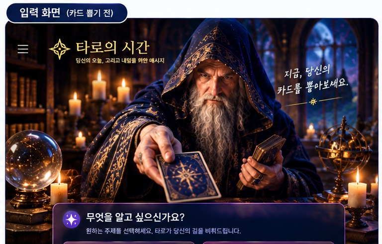
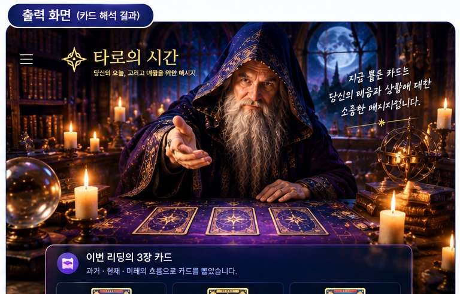

THE TAROT MOMENT
지금, 당신의
카드를 뽑아보세요.
카드를 뽑아보세요.
무엇을 알고 싶으신가요?
원하는 주제를 선택하세요. 타로가 당신의 길을 비춰드립니다.
나의 카드 기록
저장된 타로 리딩 결과를 나중에 다시 확인할 수 있습니다.

THE WIZARD'S MESSAGE
카드가 들려주는
이야기를 들어보세요.
이야기를 들어보세요.
이번 리딩의 주제
오늘의 타로
리딩 날짜
이번 리딩의 3장 카드
과거 · 현재 · 미래의 흐름으로 카드를 뽑았습니다.
MY TAROT
나의 카드 기록
저장한 리딩을 날짜별로 다시 확인할 수 있습니다.
✦
아직 저장된 리딩이 없습니다.
타로 카드를 뽑은 뒤 결과를 저장해보세요.